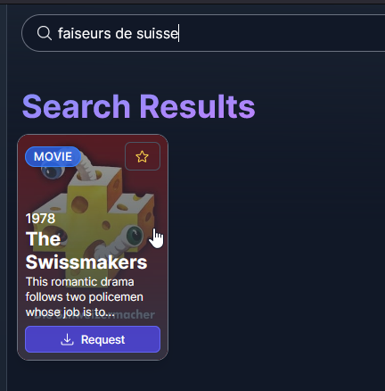
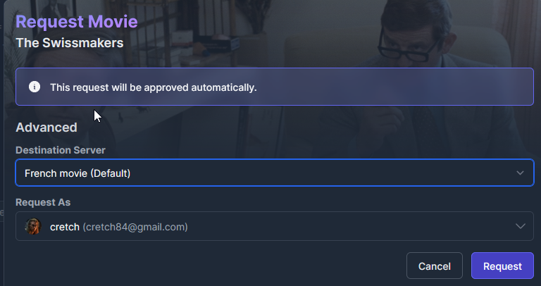
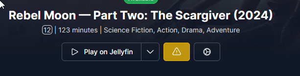

Jellyseerr¶
Jellyseerr is my platform to request new content. It's available here and shares its credentials with Jellyfin.
If you're not searching for somethign specific, please browse Discover, Movies and TV shows tabs to look at what's going on.
If you know exactly what you want, just search it with the top bar. You'll land on a list of possible results. When you hover the mouse on a result, you can see a request button is the content is nowhere on my system:

If you want more details about the movie, click on the title. If you want to download it, click on the Request button. Please change destination servers to request content in english, spanish or german.

After this, your request will be added in my system. It should download automatically after some time, so please request your content in advance.
I do some cleanup regularly, so if I'm seeing an unfullfilled request, I'll process it manually.
You can see the lists of requests in Requests tab.
Report an issue¶
Sometimes it can download the wrong content, or you wish something in another language, or subtitles are wrong. In this case, please report an issue inside Jellyseerr. To do this, first search for a content and click on the exclamation mark. Then, describe your issue precisely and send. I'll process them as soon as possible and keep you updated.
